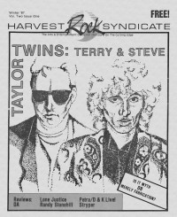

CMnexus: Contemporary Christian culture, music, and media.
|
|
Terry Scott TaylorOn the cover|  | Winter 1987
Harvest Rock Syndicate |
| May 2011
Down The Line | Media coverage:- Oct 1984 in Campus Life "Expressions: Life After Christian Music", by Patrick Kampert
- Jan 1985 in Campus Life "In Their Own Words: Terry Scott Taylor"
- Win 1987 in Harvest Rock Syndicate "Man With A Mission: Terry Taylor", by T. L. Faris
- Jul 1987 in CCM "The Mad Genius of Terry Scott Taylor", by Brian Quincy Newcomb
- Feb 1989 in CCM "Notebook: Terry Taylor Stops Kidding Around", by Brian Quincy Newcomb
- Spr 1989 in Harvest Rock Syndicate "The Spinning Vortex Into An Overnight Success", by Kevin Allison
- 1990 in Cornerstone "Interview: Festival Interviews", by David Canfield
- Jan 1991 in Harvest Rock Syndicate "The HRS Interview, Part II", by Brian Quincy Newcomb
- May 1991 in Harvest Rock Syndicate "The HRS Interview, Part III", by Brian Quincy Newcomb
- Aug 1993 in CCM "Christian Musician: Taylor-Made Productions"
- Oct 1994 in Syndicate "Terry Taylor: He Won't Go Away", by Dan MacIntosh
- Oct 1995 in CCM "Conversations: After the Altar Call", by Jim Long
- 7 Oct 1996 in Christianity Today "News: Too Holy For The World, Too Worldly For the Church", by Ted Olson
- Apr 1998 in CBA Marketplace "News Item: KMG Settles In"
- Jul 1998 in 7ball "Terry Taylor Rides A New Wave", by J. Edward Keyes
- Oct 2000 in CCM "Story Behind the Song: Diamonds To Coal", by Terry Scott Taylor
- Sep 2001 in HM "Wrapped Up In Ribbons & Bows: The Life Death and Resurrection of Daniel Amos", by J. Edward Keyes
- Dec 2005 in CCM "List-O-Rama: 5 Proofs of the Secret Connection Between Christian Music & CS Lewis", by Chris Well
- Aug 2007 in Charisma "The Jesus People: Where Are They Now"
- Jan 2009 in Down The Line "The Genesis of The Lost Dogs (as told by Terry Taylor)", by Steve Ruff
- Mar 2009 in Down The Line "Gene "Eugene" Andrusco: His Friends and Family Remember: Terry Scott Taylor (Daniel Amos, The Swirling Eddies, The Lost Dogs) on Gene Eugene"
- May 2011 in Down The Line "Terry Scott Taylor: Daniel Amos Hits the Road Again", by Steve Ruff
Albums & reviews:1986: Knowledge & Innocence1987: A Briefing for the Ascent1990: Miracle Faith Telethon of Love1998: John Wayne1998: Songs From The Neverhood Books about Terry Scott Taylor- "Terry Scott Taylor" in The Encyclopedia of Contemporary Christian Music (Mark Allan Powell, 2002)
Published articles:1 article credited in CCM: 2000.5 articles credited in HM: 2001 - 2003.2 articles credited in Worship Leader: 2002. |